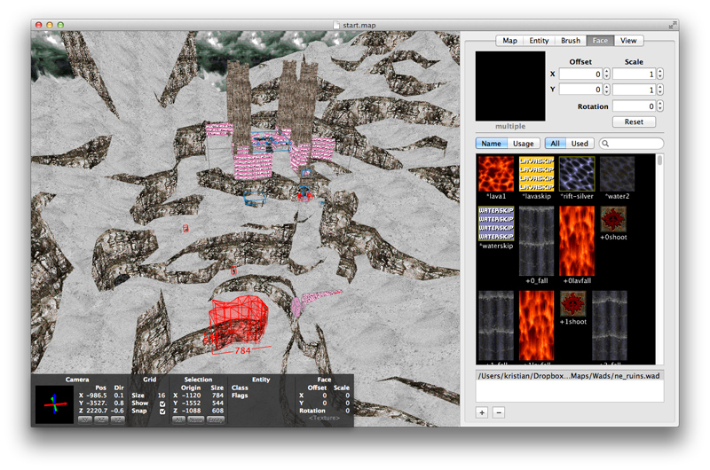

TrenchBroom is a modern level editor for Mac OS X. It has a different slightly philosophy than other editors. I believe that the traditional approach, where you work primarily in 2D views, forces you to think in 2D rather than in 3D. That's why this editor doesn't have 2D views at all - you do all work in one single 3D view.

Unlike many other free apps, TrenchBroom includes comprehensive documentation. So instead of repeating everything that's already written there, I will keep this short and suggest that you download TrenchBroom and look at the documentation if you want to learn more. You will not be disappointed.